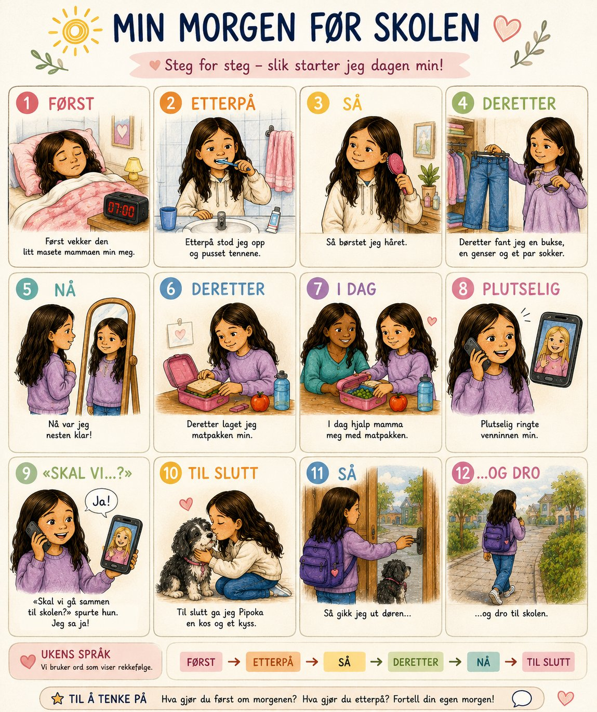

🎯 DENNE HISTORIEN ØVER PÅ
Tidsbindeord: først, etterpå, så, deretter, plutselig, til slutt, senere, samtidig, straks.
Etter bindeordet kommer verbet med en gang.
Etter bindeordet kommer verbet med en gang.

Les historien. Se på ordene som er markert.
bindeord
verb
hvem
bindeord
verb
hvem
✍️ Fortell om din morgen i dag.
Bruk først, etterpå, så og til slutt. Husk: verbet rett etter bindeordet!
Bruk først, etterpå, så og til slutt. Husk: verbet rett etter bindeordet!
Du kan begynne slik:
Først stod jeg opp.
Etterpå spiste jeg frokost.
Til slutt gikk jeg på skolen.
Etterpå spiste jeg frokost.
Til slutt gikk jeg på skolen.
⭐ Ukens språk
⭐ Først vekket mamma meg.
⭐ Etterpå stod jeg opp.
⭐ Til slutt ga jeg Pipoka en kos.
💛 Dette skrev DU – tre ganger, riktig hele veien!
25.7: Først vekket jeg meg selv, etterpå gikk jeg med Pipoka, så gikk jeg og Pipoka hjem, til slutt ga jeg en godbiter til Pipoka.
26.7: Først stod jeg opp, etterpå gikk jeg og spilte Fortnite, så gikk jeg tur med Pipoka, til slutt var jeg hjemme og koste meg.
28.7: Først stod jeg opp, etterpå børstet håret, så gikk jeg en tur med Pipoka, til slutt kom vennina mi på besøk.
Etter først, etterpå, så, til slutt kommer verbet – og så hvem.